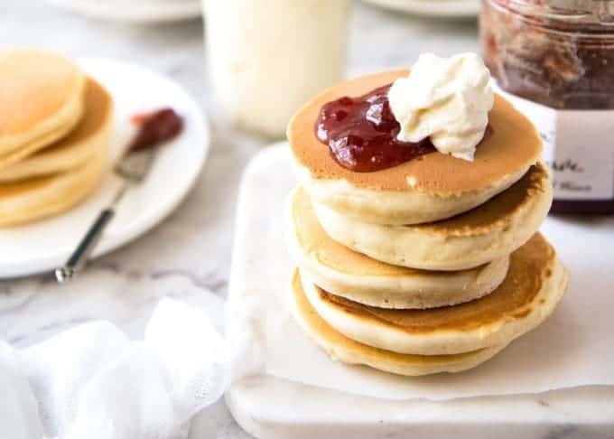

Pikelets
Description
Pikelets are like miniature pancakes, but are smaller and thicker. They taste great with butter, syrup, jam, whipped cream, and many other toppings.
Ingredients
- 1 cup self-raising flour
- 1/4 cup sugar
- 1
Tb of melted butter - 1/2 cup milk
- 1 egg
- Pinch of salt
- Pinch of nutmeg
Steps
- Sift the dry ingredients.
- Beat the egg and sugar.
- Add melted butter and milk.
- Stir in dry ingredients.
- Drop spoonful onto hot greased pan.
- Turn when brown.
- Wait until they are cold then apply butter and/or other toppings.